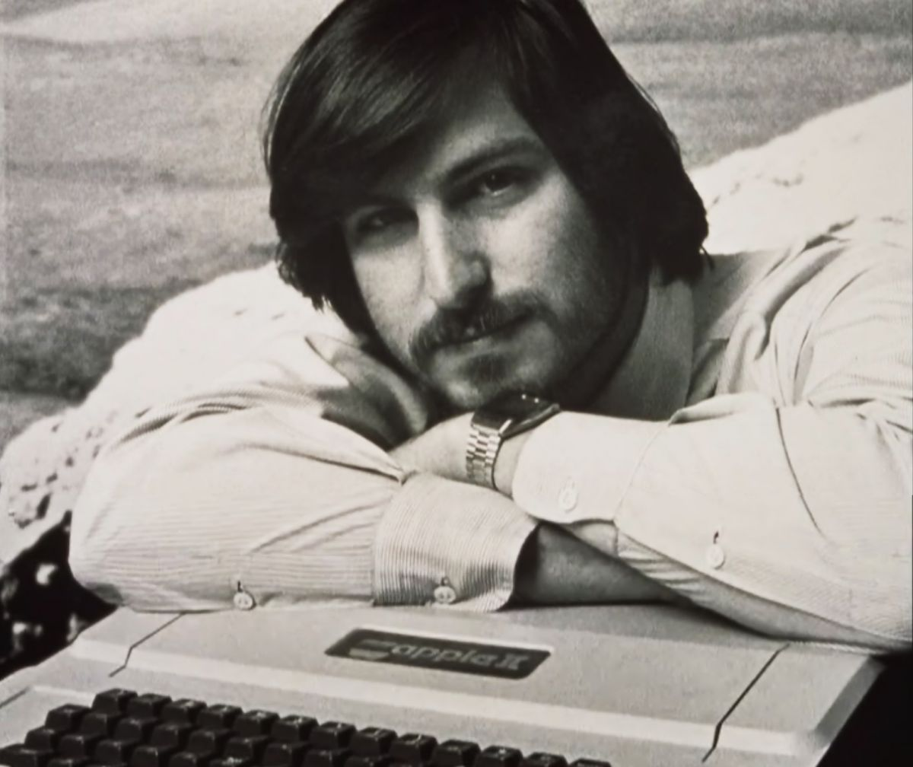

Steve Jobs

Jobs posing with Apple II.
Steven Paul Jobs was the founder of Apple Inc
- 1955 - Steven Paul was born in San Francisco, the son of Abdulfattah Jandali and Joanne Schieble. He is quickly adopted by Paul and Clara Jobs
- 1969 - Steve Jobs meets Steve Wozniak, 5 years older, through a mutual friend. Woz and Steve share a love of electronics, Bob Dylan, and pranks
- 1974 - Steve gets his first job at video game maker Atari, and later makes a trip to India to 'seek enlightenment' with his college friend Dan Kottke.
- 1976 - Woz and Steve show the early Apple I board at the Homebrew Computer Club
- 1976 - Apple Computer Inc. is incorporated by Steve Jobs, Steve Wozniak and Ron Wayne
- 1976 - Steve and Woz start assembling Apple I computers in the Jobses' garage.